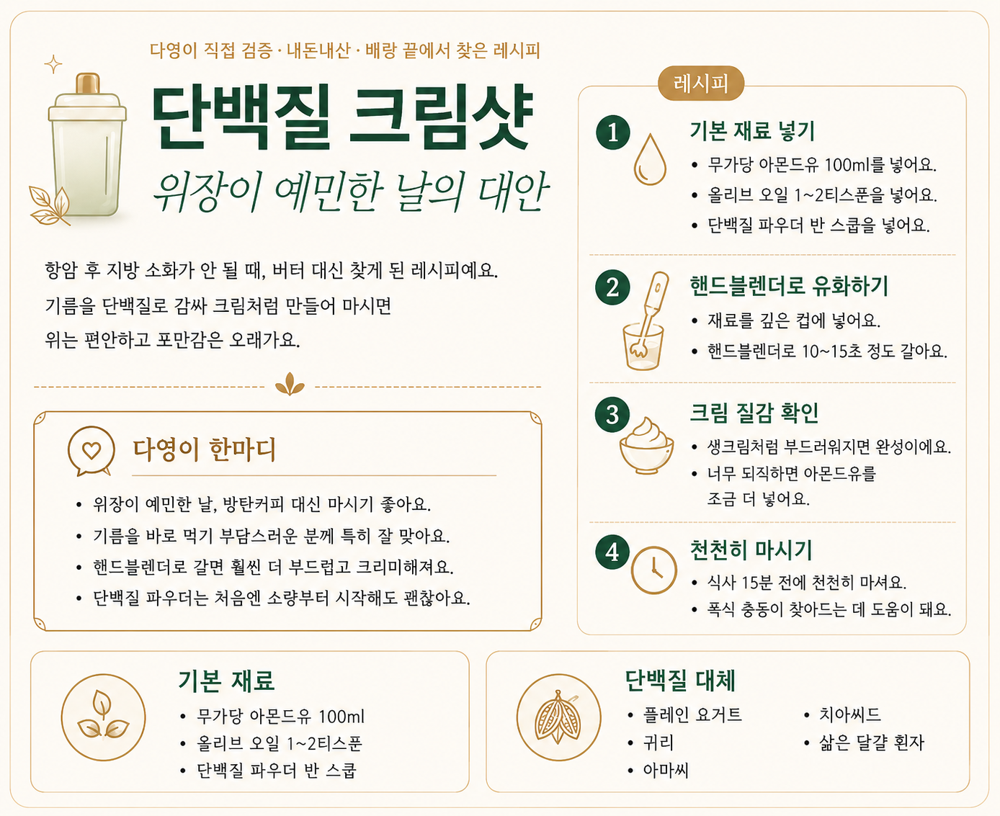
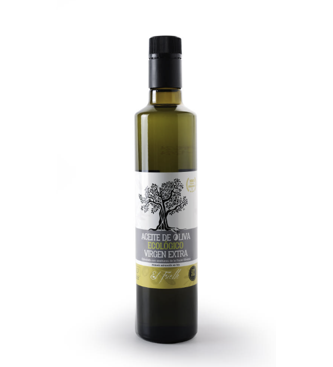
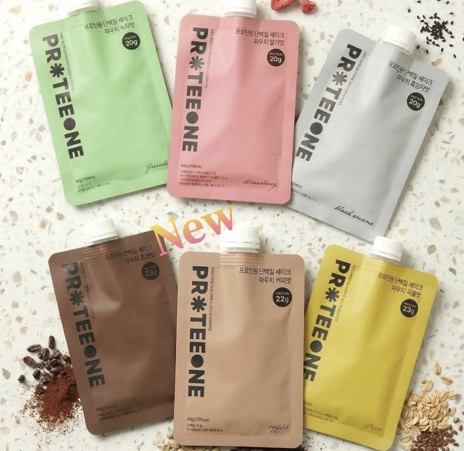
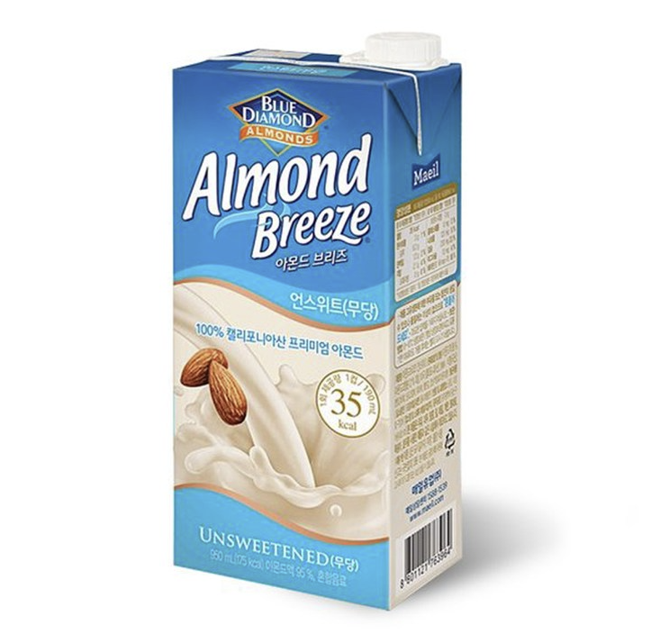
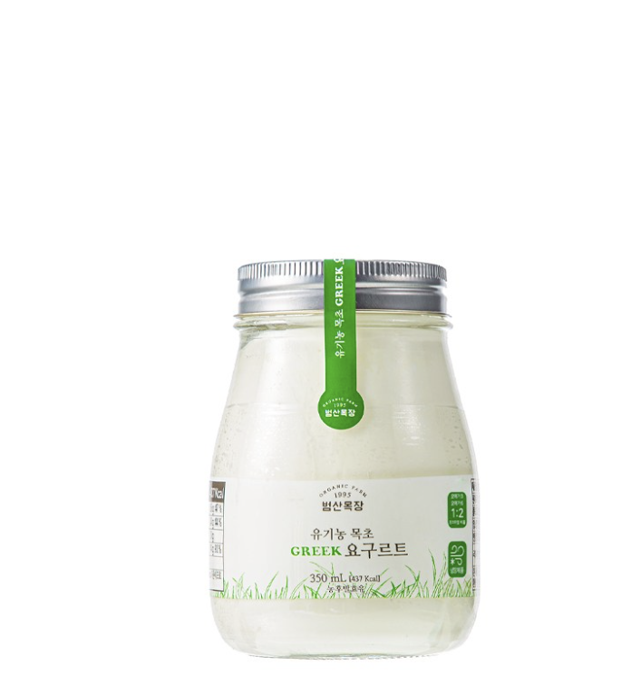
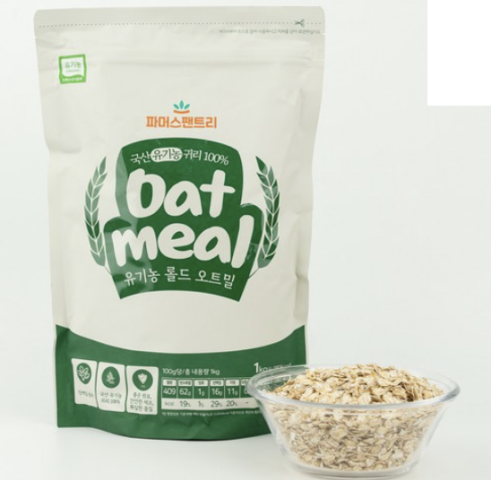
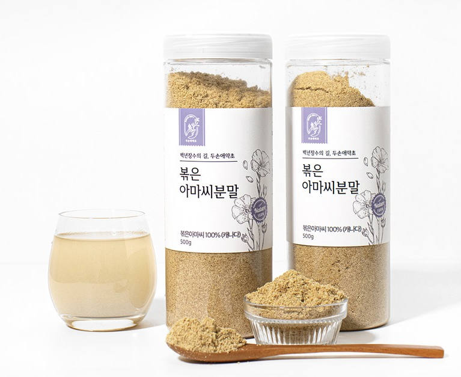
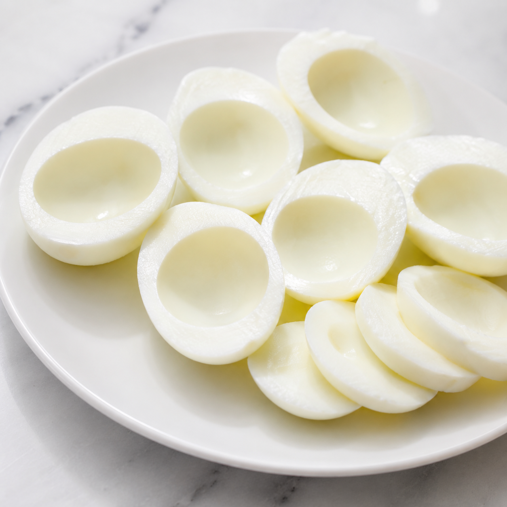

🥛 무가당 아몬드유
설탕·첨가물 없는 제품 선택 필수
다영's Pick : 물 대신 아몬드유를 쓰면 질감이 완전히 달라져요. 기름을 훨씬 부드럽게 감싸주거든요. 무가당 꼭 확인하세요 — 설탕 들어간 제품은 혈당을 올려서 크림샷 효과가 반감돼요.
🫒 올리브 오일
유기농 엑스트라버진 — 산도 낮은 제품으로 선택
다영's Pick : 산도 낮은 유기농 엑스트라버진만 골라요. 탄수화물을 줄이는 것보다 좋은 지방을 함께 넣었을 때 제 식단이 훨씬 오래 갔어요. 볶는 게 아니라 마시는 용도라 산도 체크가 특히 중요해요.
💪 단백질 파우더
프로티원 단백질 쉐이크 — 반~1스쿱 사용
다영's Pick : 오트밀이 더 자연식인 건 알아요. 근데 저는 못 먹어서 꾸준히 하려면 이게 맞았어요. 좋은 식단도 내가 계속할 수 있어야 내 몸에 남거든요. 반 스쿱이면 본식사 방해 없이 기름을 감싸줘요.

🍶 무가당 플레인 요거트
범산목장 유기농 목초원유 요거트 — 파우더 대체 가능
다영's Pick : 성분이 딱 두 가지예요. 유기농 목초원유 99.99%, 유산균 0.01%. 파우더 없이도 유청 단백질이 기름을 스펀지처럼 잡아줘서 유화가 잘 돼요. 이것보다 깔끔한 요거트는 찾기 어렵더라고요.

🌾 귀리(오트밀)
다영's Pick : 수용성 식이섬유가 자연스럽게 점성을 만들어 기름을 감싸줘요. 위장이 약한 분들께 특히 추천해요. 전날 밤 물에 불려두면 아침에 바로 쓸 수 있어요.

🌱 아마씨 간 것
다영's Pick : 오메가3가 풍부한 데다 점성까지 있어서 일석이조예요. 1 티스푼이면 기름이 자연스럽게 유화돼요. 꼭 갈아진 제품으로 사세요 — 통 아마씨는 소화가 잘 안 돼요.

🌺 치아씨드
다영's Pick : 꼭 15분 이상 먼저 물에 불려야 해요. 마른 채로 쓰면 기름을 못 감싸요. 불리면 젤처럼 부풀어서 기름을 자연스럽게 잡아줘요.

🥚 삶은 달걀 흰자
다영's Pick : 유화력이 제일 강해요. 동물성 단백질이라 포만감도 좋고요. 아침에 달걀 삶는 루틴이 있다면 흰자만 따로 챙기는 게 가장 현실적인 방법이에요.